FB／IG／官網用，共 34 張。點圖看大圖、左右滑換張；每款下面「文案」可展開複製。
店貓ㄅㄅ × Roland TD-07DMK（舊款）貼文文案 2026-11-26（規格：roland.com TD-07DMK Specifications） 【A 同一顆大腦】 新款 TD-07DMK2 出了，舊款 TD-07DMK 呢？本喵跟你說個秘密：兩台的主機是同一顆 TD-07。 50 組鼓組、143 種音色、藍牙放歌、USB 錄音，一模一樣。 差在鼓墊尺寸，聲音的大腦沒變。同樣主機，入門更划算。本店獨家販售。 #Roland #TD07DMK #電子鼓 #VDrums #店貓 【B 小房間也放得下】 整套寬 120 公分，比新款還小一點，房間角落、床旁邊就放得下。 網狀鼓皮打起來安靜，四柱鼓架穩穩不晃。 本喵拿捲尺量過，你家放得下。購買即附大鼓踏板。 #Roland #TD07DMK #小房間電子鼓 #電子鼓推薦 【C 藍牙跟歌一起打】 晚上想打鼓？戴耳機，鼓聲從耳機出來不外放；手機藍牙放歌，直接跟著打。 教練模式幫你練穩節奏，USB 接電腦還能錄音。 （大鼓踩下去地板還是會有震動，住公寓建議加鼓毯。） #Roland #TD07DMK #藍牙電子鼓 #夜間練鼓 【D 舊款獨家販售】 舊款剩下的貨，本店全包了。賣完就沒了，本喵先說。 主機跟新款一樣是 TD-07，購買即附大鼓踏板，門市購買另有超值好禮。 想要 Roland 又想省預算，就是這台。 #Roland #TD07DMK #獨家販售 #電子鼓
店貓ㄅㄅ × Roland TD-07DMK2 貼文文案 2026-11-26（規格：roland.com TD-07DMK2 Specifications） 【A 大鼓升級 KD-10】 舊款那顆細細的大鼓塔，本喵一腳就踩歪。 TD-07DMK2 換成 KD-10 落地網狀大鼓，踩下去扎實、不會跑，還可以接雙踏。 購買即附大鼓踏板，裝好就能踩。門市購買另有超值好禮。 #Roland #TD07DMK2 #電子鼓 #VDrums #店貓 【B 鼓墊全面變大】 小鼓從 8 吋升到 10 吋（PD-10H），三顆筒鼓從 6 吋升到 8 吋（PD-8H）。 打點變大，新手不容易打歪；雙層網狀鼓皮，打起來比真鼓安靜很多。 本喵試過了，閉著眼睛都打得到。 #Roland #TD07DMK2 #電子鼓推薦 #新手學鼓 【C 藍牙跟歌一起打】 手機藍牙連上去，歌從鼓的耳機裡出來，直接跟著打。 6 種教練模式幫你練穩節奏（新款多了練雙踏速度的 BLAST BEAST），50 組鼓組、143 種音色。 USB 接電腦還能錄音。本喵負責點歌。 #Roland #TD07DMK2 #藍牙電子鼓 #練鼓 【D 舊款 vs 新款】 很多人問：新款到底升級了什麼？本喵幫你比好了： 大鼓 KD-2 → KD-10、小鼓 8 吋 → 10 吋、筒鼓 6 吋 → 8 吋。 主機一樣是 TD-07，音色、藍牙、USB 都一樣。想要大鼓墊選新款，預算優先選舊款（舊款本店獨家販售）。 購買即附大鼓踏板，門市購買另有超值好禮。 #Roland #TD07DMK2 #TD07DMK #電子鼓比較
店貓ㄅㄅ × Yamaha DTX6K5-M 貼文文案 2026-11-26（規格照 Yamaha 原廠） 【A 打鼓也能打電動】 誰說練鼓很無聊？本喵練鼓都是用玩的。 內建節奏遊戲 Rhythm Gate：打得跟節拍器對上才有聲音，不準就沒聲，跟破關一樣。 用一條 USB 線接電腦，就能玩免費的打鼓節奏遊戲 Clone Hero，第一次在遊戲裡設定一下鼓的位置就好。 想有系統地練？Melodics 一關一關的打鼓課，Yamaha 有跟它合作。 #YamahaDTX6K5M #電子鼓 #CloneHero #打鼓遊戲 【B DTX6 系列最新旗艦】 DTX6 系列最新、最高的一台，本喵打過最像真鼓的。 12 吋網狀小鼓、10 吋中鼓兩顆加落地鼓，全部網狀鼓皮；13 吋 Crash 兩片、15 吋 Ride，都是三區感應；Hi-Hat 裝在真的 Hi-Hat 架上，踩起來跟真的一樣。 購買即附大鼓踏板，拿到就能打。 #YamahaDTX6K5M #電子鼓推薦 #網狀鼓皮 【C 70 組鼓聲】 本喵今天想當爵士鼓手，明天想打金屬。 音源機內建 70 組鼓組：Yamaha 錄音室鼓 Recording Custom、聲音又緊又亮的黃銅小鼓、80 年代 RX5 經典鼓機……搖滾、爵士、放克、金屬、和太鼓、電子，一台全包。 你最想打哪一種？留言告訴本喵。 #YamahaDTX6K5M #DTXPRO #電子鼓 【D 晚上在家打鼓】 晚上想打鼓？網狀鼓皮很安靜。 網狀鼓皮比真鼓安靜很多，音量旋鈕自己調，大小聲隨你，本喵半夜打，鄰居照睡。想大聲就接音箱。 大鼓還是會有踩踏的震動，住公寓的話建議鋪一張鼓毯。 #YamahaDTX6K5M #在家打鼓 #電子鼓
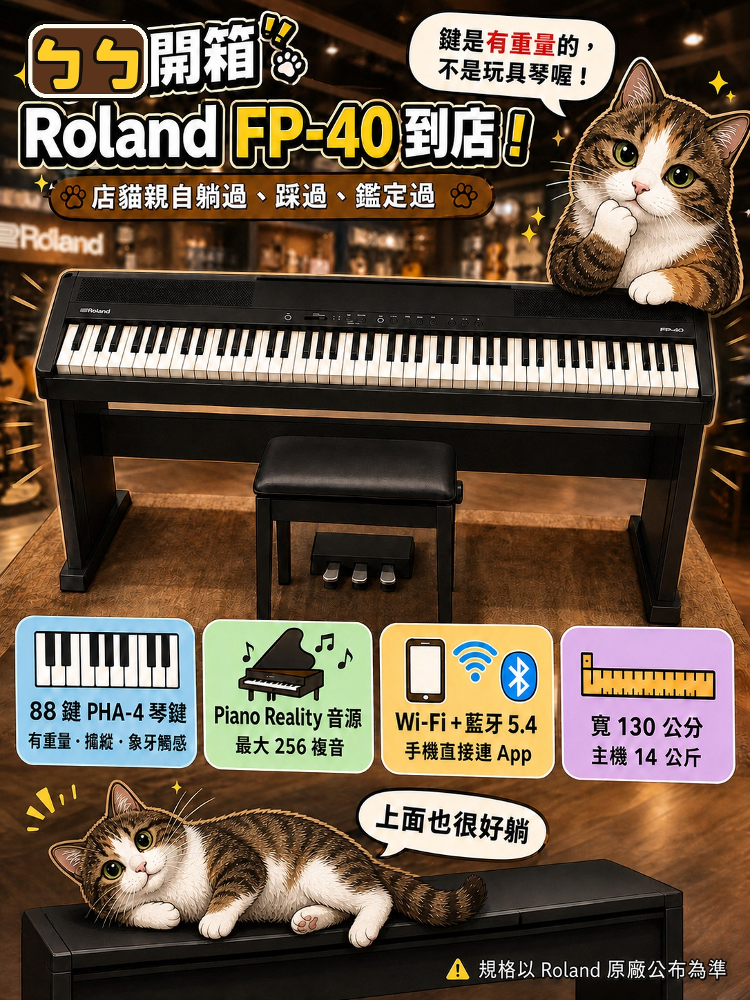
IG_1_開箱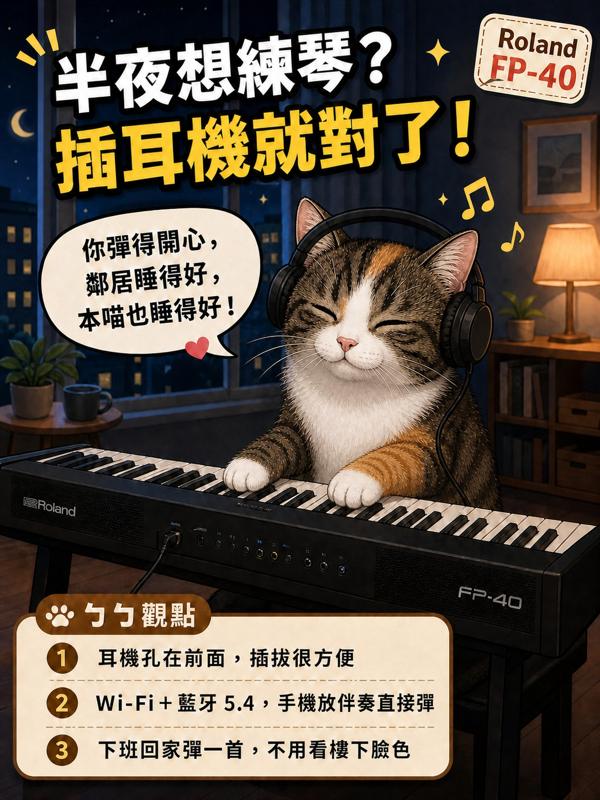
IG_2_半夜練琴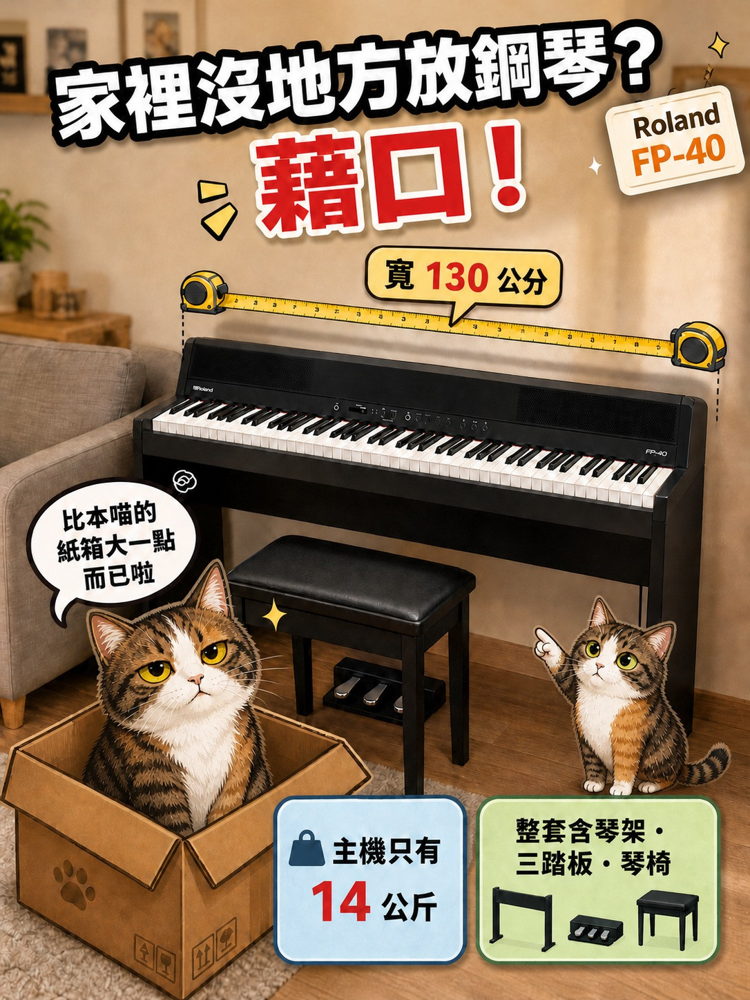
IG_3_空間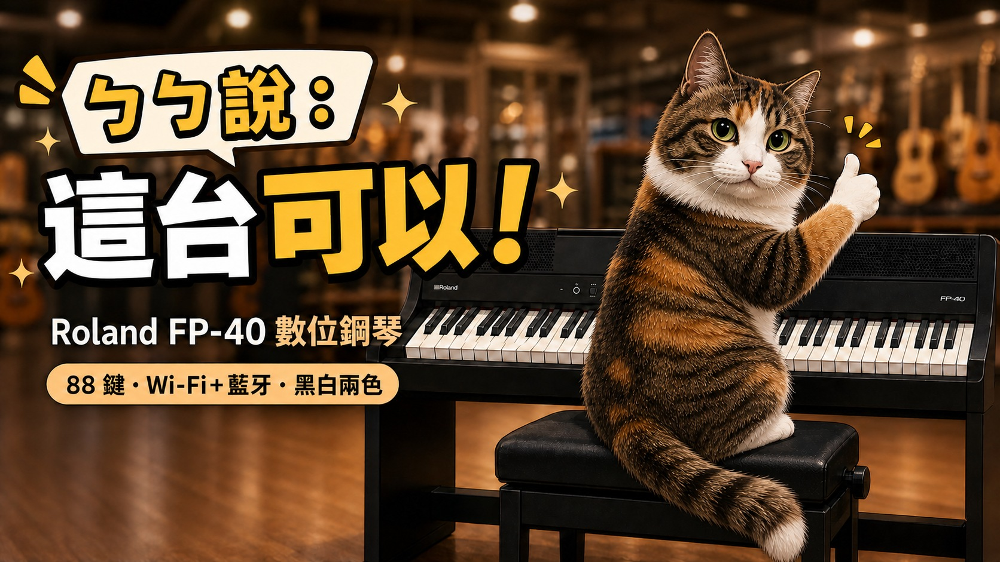
官網_橫幅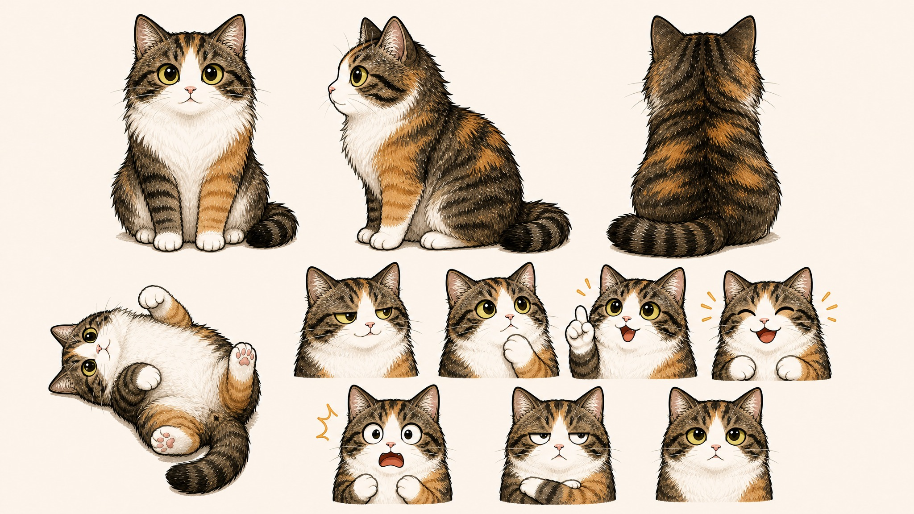
角色設定_A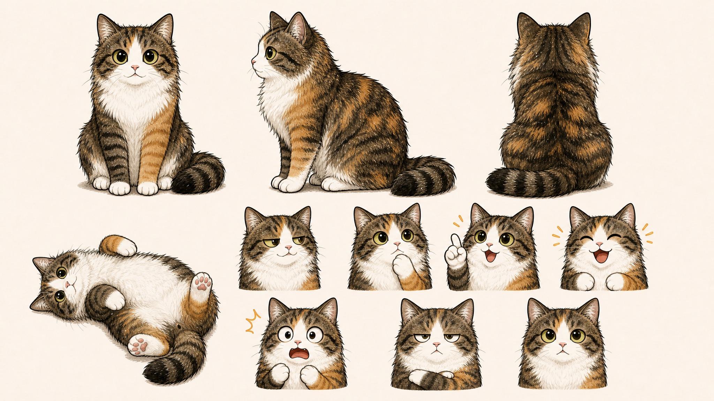
角色設定_B店貓ㄅㄅ × Roland FP-40（水豚君風格 v2）貼文文案 2026-11-26 【post1 開箱】 Roland FP-40 到店了，本喵第一個驗貨。 躺過：上面很暖，喇叭剛好可以放肚子。 踩過：鍵是有重量的，PHA-4 Standard 88 鍵，有擒縱感、象牙觸感，不是那種按下去空空的玩具琴。 聽過：Piano Reality 音源，最大 256 複音，踩延音一直彈也不會斷音。 結論：本喵給過。你們人類自己來店裡彈彈看，彈完記得幫本喵抓下巴。 #RolandFP40 #電鋼琴 #數位鋼琴 #店貓 #ㄅㄅ開箱 【post2 半夜練琴】 半夜想練琴？插耳機就對了。 你彈得開心，鄰居睡得好，本喵也睡得好，三贏。 Wi-Fi＋藍牙 5.4，手機放伴奏直接跟著彈，不用另外買喇叭。 下班回家彈一首，不用再看樓下臉色。 #RolandFP40 #夜間練琴 #藍牙鋼琴 #下班彈一首 【post3 空間】 「家裡沒地方放鋼琴」——藉口。 FP-40 寬 130 公分，主機只有 14 公斤，整套含琴架、三踏板、琴椅，靠牆就放得下。 比本喵的紙箱大一點而已啦。 你缺的不是空間，是開始。 #RolandFP40 #小空間鋼琴 #電鋼琴推薦 【官網橫幅】ㄅㄅ說：這台可以！／Roland FP-40 數位鋼琴／88 鍵・Wi-Fi＋藍牙・黑白兩色
店貓ㄅㄅ × Yamaha P-525 貼文文案 2026-11-26（規格照 Yamaha 台灣官網） 【A 拿下來就走】 搬家？表演？去教室上課？P-525 主機拿了就走。 L-515 琴架跟主機是分開的，平常在家就是一台完整的鋼琴，要出門時主機拿下來帶走，琴架留在家等你回來。 主機 22 公斤，本喵抬不動，建議找個人一起搬。 #YamahaP525 #電鋼琴 #分離式琴架 #演出用鋼琴 【B 木質琴鍵＋兩台名琴】 P 系列最高階，本喵親自鑑定。 GrandTouch-S 木質琴鍵，有擒縱感、仿象牙白鍵，手指放上去就知道不一樣。 音色一次給兩台：Yamaha CFX 跟貝森朵夫帝王琴。兩台演奏廳的平台鋼琴，本喵都聽過了，各有各的好。 #YamahaP525 #木質琴鍵 #CFX #貝森朵夫 【C 黑白兩色】 黑的穩重耐看，白的放客廳超搭。 本喵已經在中間坐了一個下午，還是選不下去。 你呢？留言告訴本喵你選哪一台。 #YamahaP525 #黑色鋼琴 #白色鋼琴 【D 耳機／藍牙】 半夜戴耳機，也像坐在演奏廳。 CFX 雙耳取樣，戴耳機聽到的是平台鋼琴的空間感，鄰居不會知道你多認真。 手機開藍牙，音樂直接從琴的喇叭放出來跟著彈；Smart Pianist App 選音色、看和弦。 白天就把 52W 雙向喇叭打開，大聲彈。 #YamahaP525 #夜間練琴 #藍牙鋼琴 #SmartPianist
店貓ㄅㄅ × Yamaha YDP-105 貼文文案 2026-11-26 （規格來源：Yamaha 台灣官網 YDP-105 規格頁） 【A 有蓋子才像鋼琴】 本喵最愛的事：趁你不在，去琴鍵上走一圈。 YDP-105 有滑動式琴蓋，彈完一拉就蓋好，灰塵、貓毛、本喵的腳印通通進不去。 很多入門電鋼琴是「主機放在琴架上」，琴鍵整天露在外面；這台是一體式家具琴身，多一個琴蓋。 Yamaha 有琴蓋的鋼琴裡，這台最划算。本店獨家販售。 #Yamaha #YDP105 #數位鋼琴 #電鋼琴 #店貓 【B Yamaha 經典音色】 本喵耳朵很挑，這個聲音聽得出來是 Yamaha。 AWM 立體聲取樣的 Yamaha 平台鋼琴音色，踩下延音踏板還有延音共鳴，整台琴一起響。 GHS 配重琴鍵，88 鍵低音重、高音輕，跟真鋼琴一樣的手感；霧面黑鍵不滑手。 三踏板、10 種音色、10 首鋼琴曲，上課、考檢定都夠用。 #Yamaha #YDP105 #電鋼琴推薦 #學鋼琴 【C 一家人一起彈】 晚上想練琴？兩個耳機孔，爸媽跟小孩、老師跟學生可以一起戴。 雙人模式把琴分成左右兩半，兩個人用同一個八度並排一起練。 還有音量上限鎖，設好最大音量，小孩戴耳機不會開太大聲。 你們彈你們的，本喵睡本喵的。 #Yamaha #YDP105 #親子鋼琴 #夜間練琴 【D 放客廳就是家具】 深玫瑰木一體琴身，琴架、喇叭、三踏板都收在琴裡，放客廳就像一件家具。 寬 135.7 公分，靠牆就放得下；購買即附琴椅（那張椅子本喵先坐了）。 接手機、平板用 Smart Pianist App（需 USB 線），換音色、看內建曲譜都方便。 #Yamaha #YDP105 #客廳鋼琴 #數位鋼琴
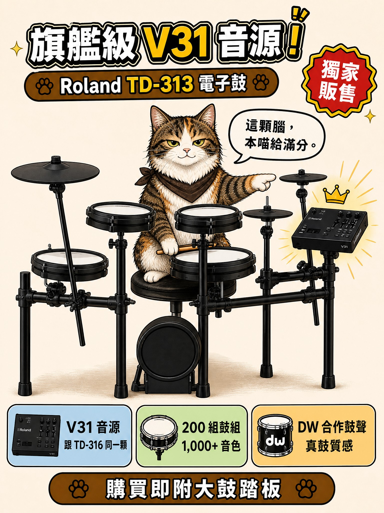
TD313_A_V31音源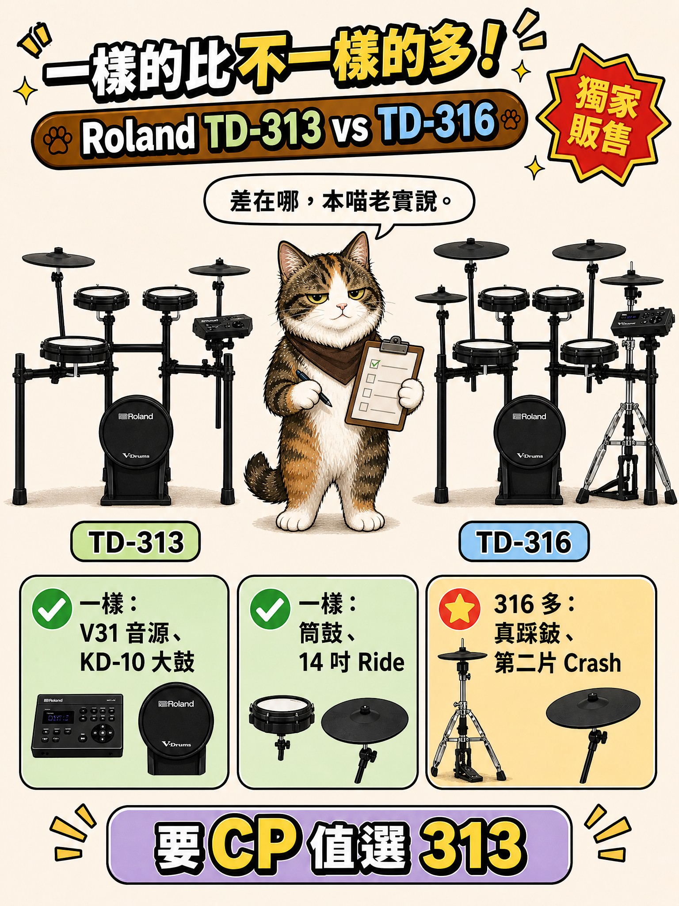
TD313_B_比316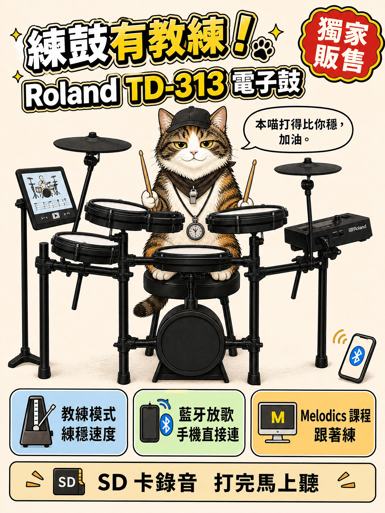
TD313_C_練鼓有教練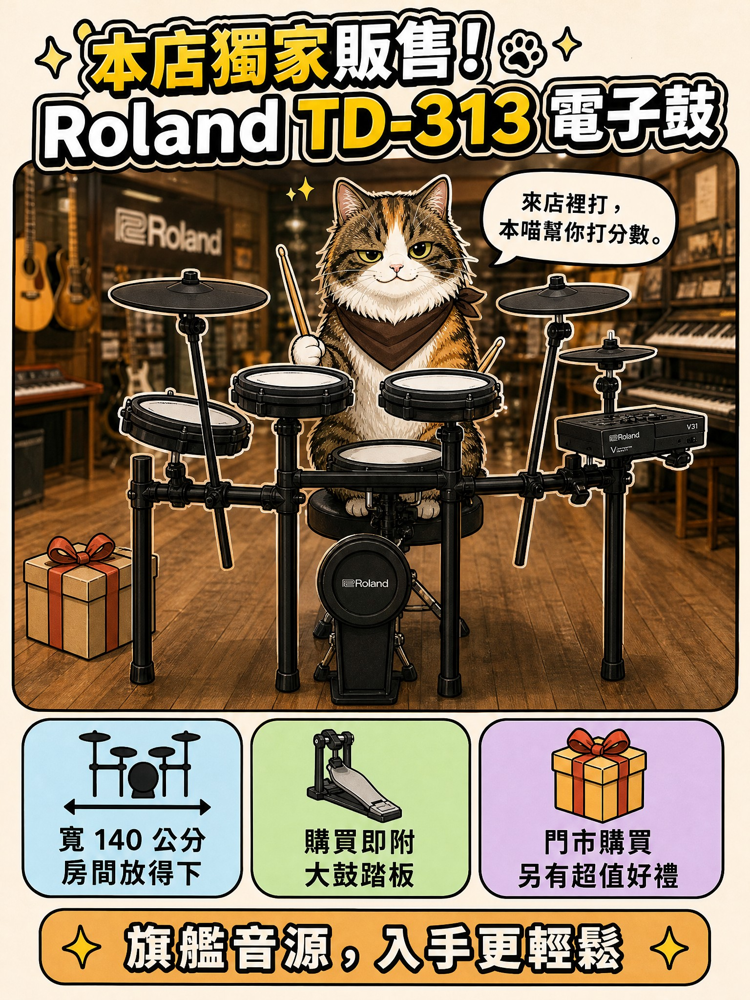
TD313_D_獨家販售店貓ㄅㄅ × Roland TD-313 貼文文案 2026-11-26（規格：roland.com TD-313 / TD-316 Specifications） 【A 旗艦級 V31 音源】 TD-313 用的是 V31 音源，跟 TD-316 同一顆。 最多 200 組鼓組、1,000 種以上音色，跟 DW 合作的鼓聲，打起來就是真鼓的質感。 這顆腦，本喵給滿分。本店獨家販售。 #Roland #TD313 #電子鼓 #VDrums #店貓 【B 313 vs 316 比一比】 本喵老實說，兩台一樣的地方比不一樣的多： 一樣：V31 音源、KD-10 大鼓、筒鼓、14 吋三區 Ride。 316 多的：真踩鈸、第二片 Crash、會感應打點位置的小鼓。 要 CP 值選 313，想一步到位選 316。 #Roland #TD313 #TD316 #電子鼓比較 【C 練鼓有教練】 Coach 教練模式幫你練穩速度、算拍；藍牙連手機放歌直接跟著打。 還能用 Melodics 線上課程跟著練，打完用 SD 卡錄音馬上聽自己哪裡不穩。 本喵打得比你穩，你要加油。 #Roland #TD313 #練鼓 #Melodics 【D 本店獨家販售】 TD-313 本店獨家販售。 整套寬 140 公分，房間放得下；購買即附大鼓踏板，門市購買另有超值好禮。 來店裡打打看，本喵在旁邊幫你打分數。 #Roland #TD313 #獨家販售 #電子鼓推薦
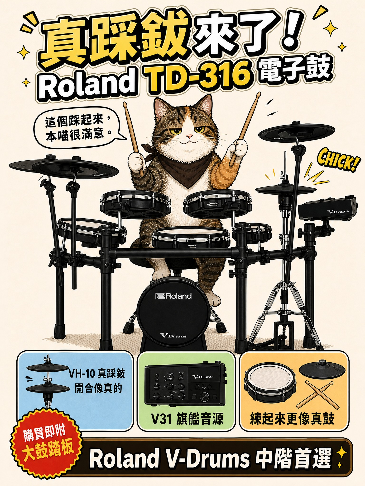
TD316_A_真踩鈸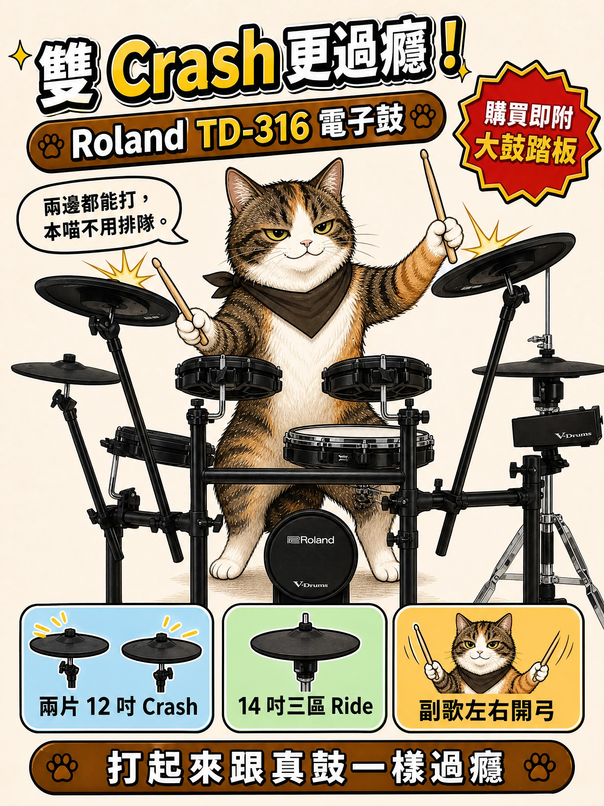
TD316_B_雙Crash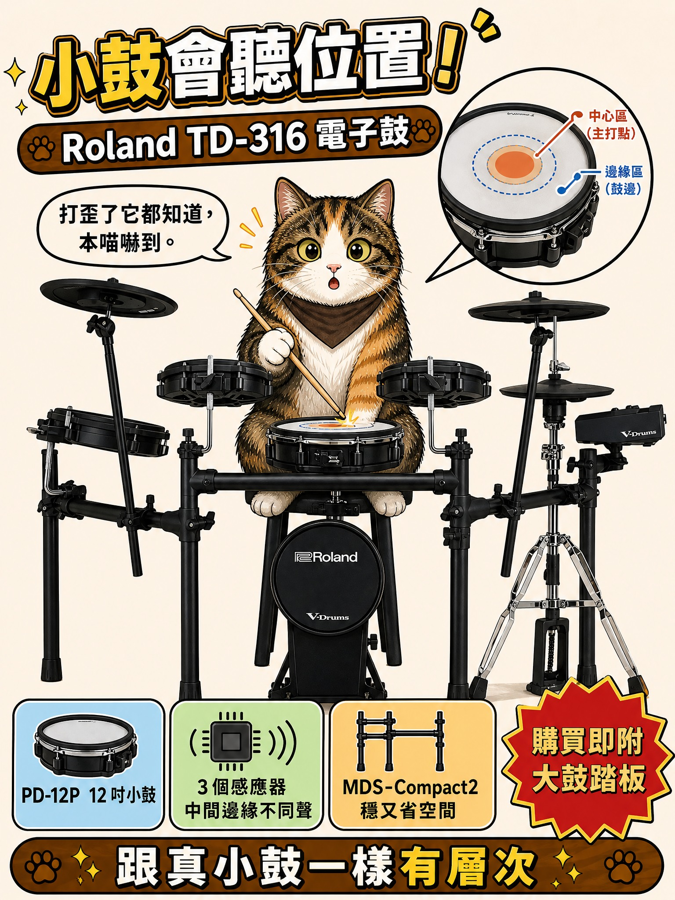
TD316_C_小鼓感應位置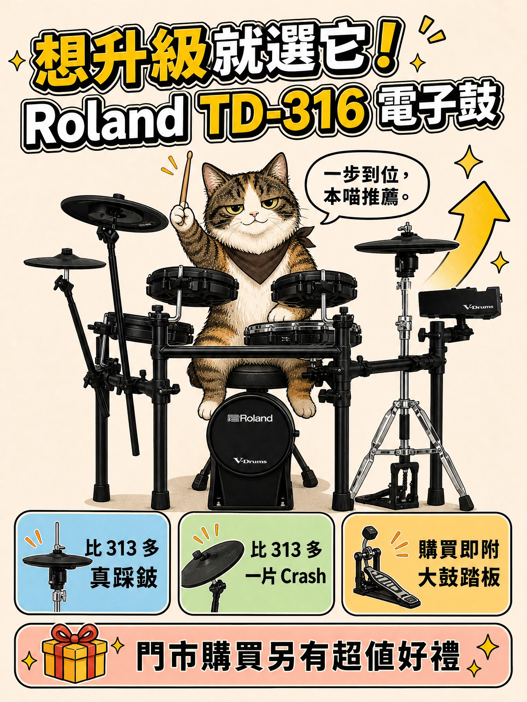
TD316_D_想升級選它店貓ㄅㄅ × Roland TD-316 貼文文案 2026-11-26（規格：roland.com TD-316 Specifications） 【A 真踩鈸來了】 TD-316 用的是 VH-10 真踩鈸，開、合、半開都跟真的 Hi-Hat 一樣，練起來更像真鼓。 搭配 V31 旗艦音源。 本喵踩過了，這個很滿意。 #Roland #TD316 #電子鼓 #VDrums #店貓 【B 雙 Crash 更過癮】 兩片 12 吋 Crash，加上 14 吋三區 Ride，副歌左右開弓。 本喵兩邊都想打，終於不用排隊了。 #Roland #TD316 #電子鼓推薦 #打鼓 【C 小鼓會聽位置】 PD-12P 12 吋小鼓，裡面有 3 個感應器，打中間、打邊緣聲音不一樣，跟真小鼓一樣。 鼓架是 MDS-Compact2，穩又省空間。 本喵打歪了它都知道，有點可怕。 #Roland #TD316 #PD12P #電子鼓 【D 想升級就選它】 比 TD-313 多了真踩鈸、多一片 Crash、小鼓會感應打點位置。 預算夠、想一步到位，就選 316。購買即附大鼓踏板，門市購買另有超值好禮。 #Roland #TD316 #TD313 #電子鼓比較